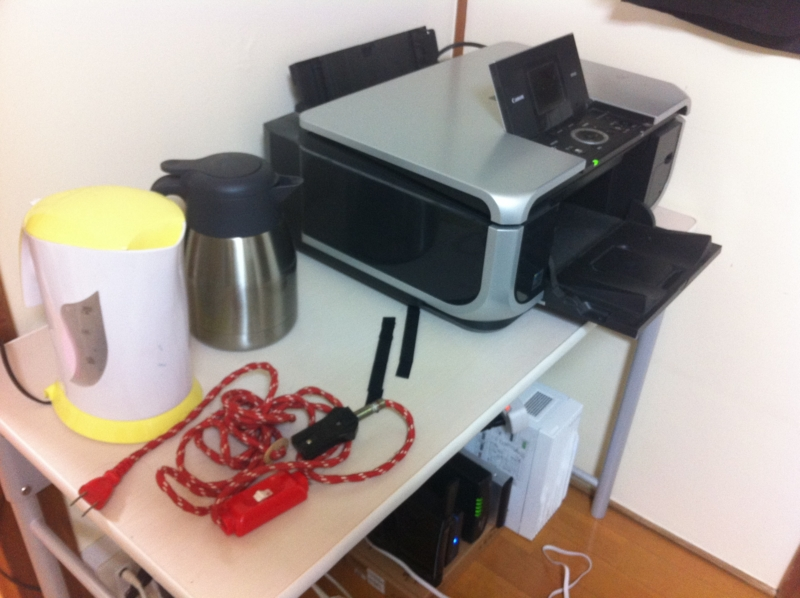
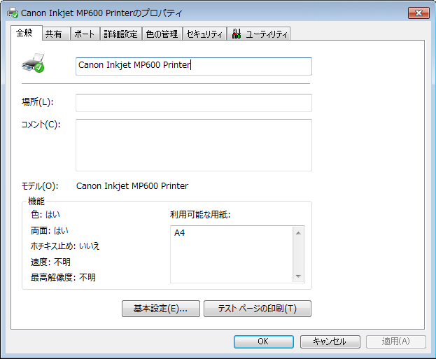
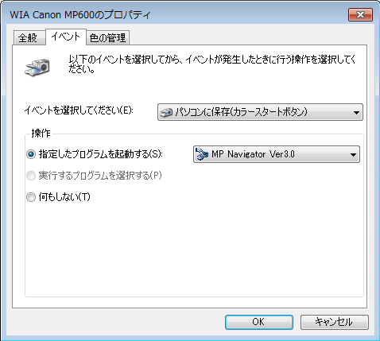

Windows Home Server 2011 をプリンターサーバとして利用する → 諸事情あってやめた
公開日：

無線LANも安定稼働するようになった*1ので、今度はホコリをカブっていたプリンタ複合機を引っ張り出して、Windows Home Server に繋いだ。ふとした縁でタダでもらったものだ。
これまではメインマシンに直結して使っていたけれど、常時起動が前提のホームサーバーをプリンターサーバとして使えば、メインマシンに電源を入れなくてもいろんなデバイスからアクセスできて便利だろう。

ドライバーのインストールに成功*2。リモートからの印刷にも成功した*3。ただ、どうしても古いドライバーのアンインストールに失敗するので、解凍ソフト「Lhaz」で自動解凍形式の書庫ファイルをバラして、デバイスマネージャーから［ドライバーの更新］を利用してインストールした。

しかし、問題が。プリンター本体のボタンを押しても、スキャン → フォルダへ保存が始まらない。ユーティリティソフトを入れても、症状は同じだった。スキャナードライバーのプロパティ画面ではボタンの挙動を設定できるのだけど、実際には動かないらしい。
こいつはもともとプリンタとしてよりも、スキャナとしての利用頻度のほうが高い。現に、今はインクがない状態でそのまま半年以上は放置されている。なので、本体の操作でほいほいスキャンできないのはちょっと不便だ。まさかいちいちリモートデスクトップでサーバーにつないでユーティリティソフトを起動してスキャン……なんてことはできない。ちょっと残念だけど、やはりメインマシンに繋ぎ直したほうがよさそう。
何か対応策があればいいのだけど。